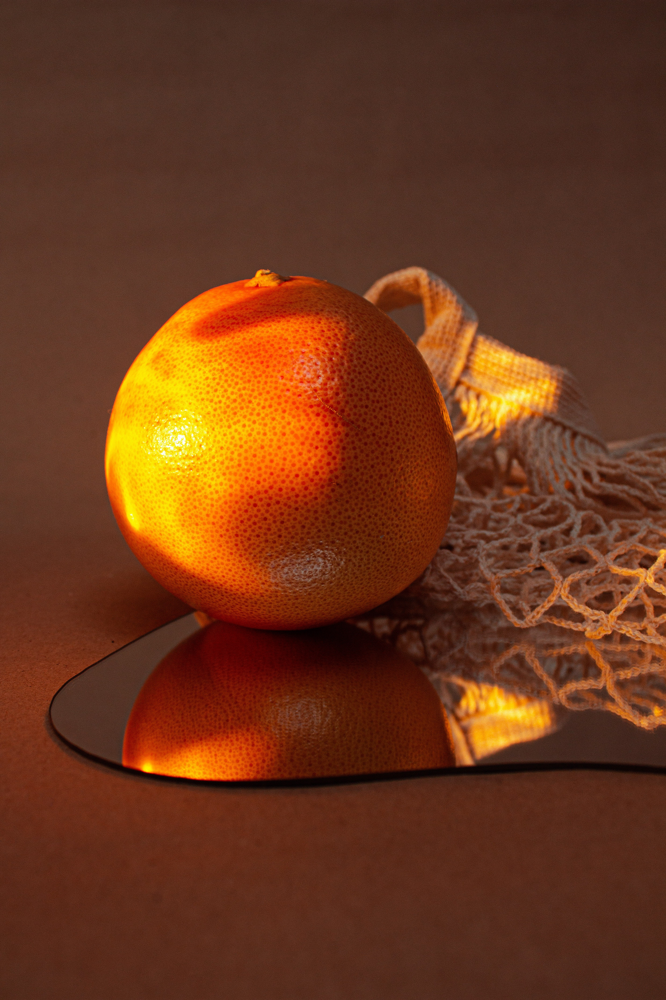

Портокалът, или по-точно сладкият портокал, е цитрусовото дърво Citrus sinensis и неговият плод. Портокалът е хибрид с древен произход, вероятно между помело (Citrus maxima) и мандарина (Citrus reticulata). То е малко цъфтящо дърво, растящо до 10 м височина с вечнозелени листа, които са подредени алтернативно, имат яйцеобразна форма и са 4 – 10 см дълги. Богат е на витамин С. Портокаловият плод е вид месест семков плод.
Портокалите произхождат от югоизточна Азия – Индия, Виетнам и южен Китай. Плодът на Citrus sinensis е наречен сладък портокал, за да се различава от Citrus aurantium, който е „горчив портокал“. Английската дума произлиза от Санскрит:naranga-s („оранжево дърво“). В редица езици, портокалът е известен като „Китайска ябълка“ (например на холандски „Sinaasappel“ – „Китайска ябълка“, а оттам и на руски „Апельсин“).